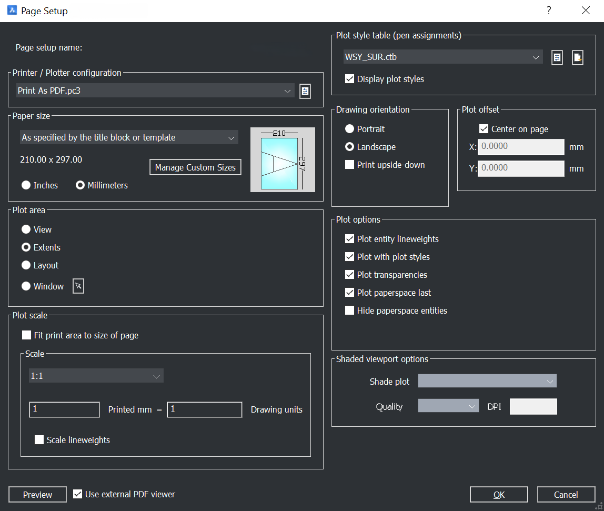

WSY Drafting Standards
The specific standard used by the Western Sydney drafting team — documented openly as a starting point, not as a firm-wide requirement.
Colour and line weight
Line weight is driven by colour through the plot style table. Set objects ByLayer and let the layer's colour determine the plotted weight.
| Colour | Typical use |
|---|---|
| 1 — Red | Road names and emphasis |
| 2 — Yellow | Subject lot numbers, areas |
| 3 — Green | Easements |
| 4 — Cyan | Subject boundaries |
| 6 — Magenta | Labels, survey marks, occupations |
| 7 — White / Black | Adjoining boundaries and general linework |
| 8 — Grey | Dimensions and bearings |
Text styles
| Style | Used for |
|---|---|
| LARGE LABEL | Subject lot numbers, road names |
| MEDIUM LABEL | Areas |
| SMALL LABEL | Dimensions, bearings, ties, SSM and traverse text |
| THIN LABEL | Road and easement labels, reference text |
| ADJOINING LABEL | Adjoining lot numbers |
Text height is always TEXTSIZE ÷ annotation scale, and text is created
annotative.
Layer management
Layers are created on demand by the commands — you shouldn't need to make them by hand.
Before issuing a drawing, run DWGHEALTH and PURGE to clear unused
definitions.
Page setup

Sheets plot through the BW plot configurations with the BW plot style tables. The engineering and WAE plot commands apply these automatically.